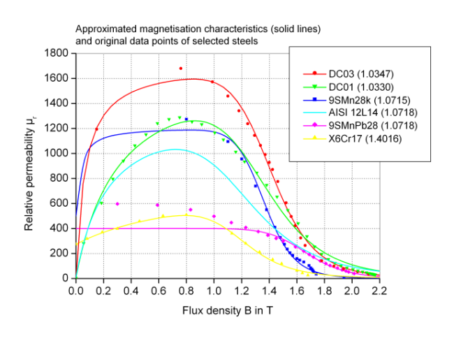
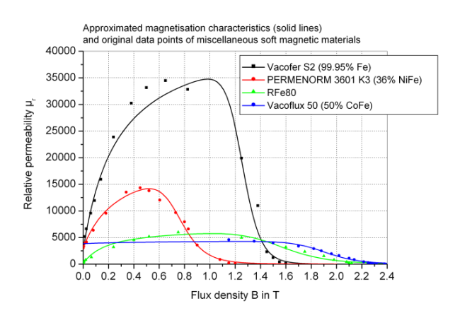

SoftMagneticCharacteristics mu_r(B) of common soft magnetic materials; hysteresis neglected |
Package Contents
|
Coefficients for approximation of soft magnetic materials |
|
|
Various ferromagnetic steels |
|
|
Various electric sheets |
|
|
Pure iron |
|
|
Cobalt iron |
|
|
Nickel iron |
|
|
Approximation of relative permeability mu_r as a function of flux density B for soft magnetic materials |
Information
This information is part of the Modelica Standard Library maintained by the Modelica Association.
The magnetisation characteristics mu_r(B) of all soft magnetic materials currently included in this library are approximated with a function. Each material is characterised by the five parameters of this function. The approximated characteristics mu_r(B) for most of the ferromagnetic materials currently included are shown in the plots below (solid lines) together with the original data points compiled from measurements and literature.



For the nonlinear curve fit, data points for high flux densities (approximately B>1T) have been weighted higher than the ones for low flux densities. This is due to the large impact of saturated ferromagnetic sections in a magnetic circuit compared to that of non-saturated sections with relative permeabilities mu_r>>1.
Note that the magnetisation characteristics largely depend on possible previous machining and on measurement conditions. A virgin material normally has a considerably higher permeability than the same material after machining (and packet assembling in case of electric sheets). This is indicated in the above plots by different magnetisation curves for similar materials. In most cases, the original data points represent commutating curves obtained with measurements at 50Hz.
Additional user-specific materials can be defined as needed. This requires determination of the approximation parameters from the original data points, preferably with a nonlinear curve fit.